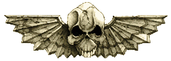
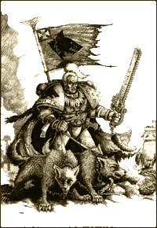

| |
Az
Oroszlán és a Farkas

Miután a Császár megtalálta elveszett
gyermekeit, elkezdte egyesíteni a különálló
uradalmakra szakadt emberiséget. A Császár Légiói
elvitték az igaz hitet mindazoknak, akik
hallgattak szavára, és a halált azoknak, akik
nem. Hatalmas háborúk pusztították a galaxist,
sokan inogtak meg hitükben, és fordultak el a Császár
fényességétõl. Néhányan közülük érdemes
emberek voltak, ám félrevezették õket. Néhányan
zsarnokok és árulók, akik kapzsi módon próbáltak
hatalomra törni. És néhányan meghallgatták a
Káosz démonainak suttogását, harci lobogóikat
az egész emberiség ellen emelve fel. Az ûrgárdisták
pedig végtelen háborúikat vívtak az
eretnekekkel. Rendíthetetlenek voltak, erõsek,
vezetõik pedig halhatatlanok.
A háborúkat nemcsak a renegátok
ellen vívták, hanem az orkok, az eldák és más
megnevezhe- tetlen szörnyûségek légiói ellen
is. Azon kor volt ez, ahol az egyszerû ember is
gyõzelmet arathatott, és kivívhatta a Császár
figyelmét. Egy sötét kor, a szörnyû mészárlások
és a nemes hõstettek kora. De a remény kora is!
Az élõ Császár az emberek közt járt, és
elvitte nekik egy stabil és békés birodalom ígéretét,
a szabadság ígéretét, ahol nem kell a Sötét
Erõk zsarnokai, és csatlósaik kénye kedvének
kiszolgáltatva élni.
Abban a szörnyû, ám ugyanakkor nemes
korban a primarchák élõ istenekként járták a
világokat. Az Összeomlás elõtti idõkben, a Császár
Horust kedvelte leginkább fiai közül, és az
emberiség urának minden oka megvolt, hogy büszke
legyen. Az emberiséget gyõzelembõl gyõzelembe
vezette. Nemes volt és büszke, mindenki
tisztelte, és bízott benne. Õ volt a legbátrabb
a bátrak közt, a legerõsebb az erõsek közt.
Szavai szónokiak voltak, nézetei ésszerûek és
igazságosak. Adott szavát minden körülmények
közt betartotta, gondolatait törvényekbe
foglalták. Csatában sosem akadt legyõzõre.
|  |
Horus mindig is elsõ volt a primarchák közt,
de voltak köztük, akik vetekedtek hírnevével: Jaghatai
Khan, a Fehér Sebhe- lyektõl, aki
mestere volt a villámgyors rajtaütéseknek. A szárnyas
Sanguinius, az éles szemû és tiszta szívû.
Leman Russ az Ûrfarkasok primarchája,
a féktelen, vad és merész harcos. És természetesen
ott volt a szûkszavú Lion El'Jonson,
kinek hallgatása mély bölcsességet takart.
A primarchák egy testvériséget alkottak, és
mint minden testvér közt, köztük is jelen volt
a rivalizálás: szinte hajszolták a gyõzelmeket,
hogy ezáltal elnyerjék a Császár figyelmét.
Ugyan a legtöbb testvér- hez hasonlóan, õket is
szoros kötelékbe kovácsolta a közös vér, de
nem szûnt meg köztük az örökös viszálykodás
sem. Néha pedig ezek az ellentétek hevesebben törtek
fel köztük. Ennek egyik leghíresebb és
leghosszabban elhúzódó példája éppen Russ és
Jonson közt esett meg. |
Azt beszélik, hogy ez a két ember már
elsõ látásra ellenszenvet táplált egymás iránt,
mikor elõször találkoztak a nagy márvány
csarnokban a Császár Palotájában, még az õsi
Földön. Russ túlságosan lenézõnek és zárkózottnak
gondolta Jonsont. Jonson pedig meg volt gyõzõdve
róla, hogy Russ hencegõ és közönséges. Azt
is beszélik, hogy amíg a Terrán tartózkodtak,
alig váltottak egy két szót egymással, mivel
Jonson keveset beszélt és ezt Russ sértésnek
vette.
Jonson amilyen szûkszavú volt, olyan bátor
és erõskezû vezére embereinek. A Nagy
Keresztes Hadjárat idején csak õ és Horus
tudott több gyõzelmet felmutatni, Russnál.
Russt viszont mindig is a hírnév és a megbecsülés
érdekelte, mindig nagy odaadással mesélte hõstetteinek
történetét, éppen ezért érthetõ, hogy felbõszítették
társai sikerei. Az események Dulan világán tetõztek
be végleg, amikor a Sötét Angyalok és az Ûrfarkasok
lerohanták a bolygó urának, Durathnak Karmazsin
Erõdjét. Durath személyesen sértette meg a Császárt,
és tízezer hívõt áldozott fel a patrónusául
szegõdött démonnak, hogy az szavatolja gyõzelmét.
Mindkét primarcha meg akarta szerezni az áruló
fejét.
Russ mindig is forrófejû volt és úgy
gondolta, neki kellene a rohamot vezetni. Durath
azt állította, hogy Russ a Császár ölebe, és
szívesen etetné meg Russ szívét a grox-ával.
Fenris ura erre szörnyû dühbe tört ki, és eldöntötte,
hogy eltörli ezt a szégyenfoltot becsületérõl.
Megfogadta, hogy személyesen pusztítja el
Durathot, és vágja ki az áruló szívét.
Olyannyira dühös volt, hogy utasította Jonsont:
álljon félre és hagyja, hogy az Ûrfarkasok
rohanják le a Karmazsin Erõdöt elsõként.
Jonson viszont, aki napokig tervezte az offenzívát,
saját maga derítette fel az erõd gyenge
pontjait, megtagadta ezt a kérést, és rögvest
megindította a támadást. Ezután a Sötét
Angyalok lerohanták a hatalmas citadellát,
Jonson pedig megölte Durathot a várfalon
folytatott végsõ csatában. Russ ekkor egy elhúzódó
kézitusába keveredett a várfal tövében, és
csak végignézhette Jonson gyõzelmét, miközben
üvöltött szörnyû haragjában.
Haragja oly nagyra duzzadt, hogy mikor a
csata véget ért, és Jonson gyõzedelmesen állt
Durath csarnokábam, Russ odament hozzá és megütötte
a Sötét Angyalt. Jonson erre talpra állt, és
visszaütött. A nagy csarnok kiürült körülöttük,
ahogyan a két primarcha egymásnak esett.
Embereik mind õket nézték, miközben bátorító
kiáltásokat eresztettek meg a küzdõk felé.
Egy napon és egy éjszakán át küzdöttek, tökéletes
összhangban az emberfeletti erõ és gyorsaság
tekintetében. Russ volt az erõsebb, Jonson pedig
a gyorsabb, küzdelmük kiegyensúlyozott volt.
Mindketten kitanulták a pusztakezes harc
minden fortélyát a Császártól és Horus
nagymestertõl. Mindketten ismerték a legapróbb
trükköket és fogásokat is. A harc kitódult a
terembõl, át a csatatérre. Egy teljes nappal késõbb
a két küzdõ fél fáradtan nézte egymást
Durath erõdjének romjai fölött. Russ, aki éppoly
gyorsan lobbant haragra, mint amilyen gyorsan képes
volt jókedvre derülni, hirtelen meglátta a történtek
vicces oldalát, és elkezdett tiszta szívbõl
nevetni. Számára a harc véget ért: mindkét
ember ereje fel lett mérve, és becsületük ki
lett elégítve.
Jonson viszont nem volt jókedvû, lassan dühödött
be, de ugyanilyen lassan bocsátott is meg. Russ
elsõ ütését pedig álnok cselekedetnek
tartotta. Amíg Russ önfeledten nevetett, Jonson
odament hozzá, és úgy ütötte meg a másik
primarchát, hogy az elájult. Az elalélt Russt
saját emberei vitték ki az erõdbõl, a Sötét
Angyalok gúnyolódásától kísérve. Jonson
ezek után gondolta úgy, hogy a becsületén
esett csorba ki van köszörülve.
Mire Russ felébredt, a Sötét Angyalok már
elmentek, a Császár szólította õket magához,
hogy részt vegyenek az Alisore hadjáratban. Ezek
után Russ megfogadta, hogy megbosszulja Jonson
alantas ütését, és ezzel megkezdõdött a századokon
át tartó ellentét a két rendház közt. Még
napjainkban is, amikor az Ûrfarkasok találkoznak
a Sötét Angyalokkal, egy emberük kiáll Jonson
egyik fiával, és a küzdõ felek harcba szállnak
rendházaik becsületért.
Fordította: Hmuda &
Rince
|
|